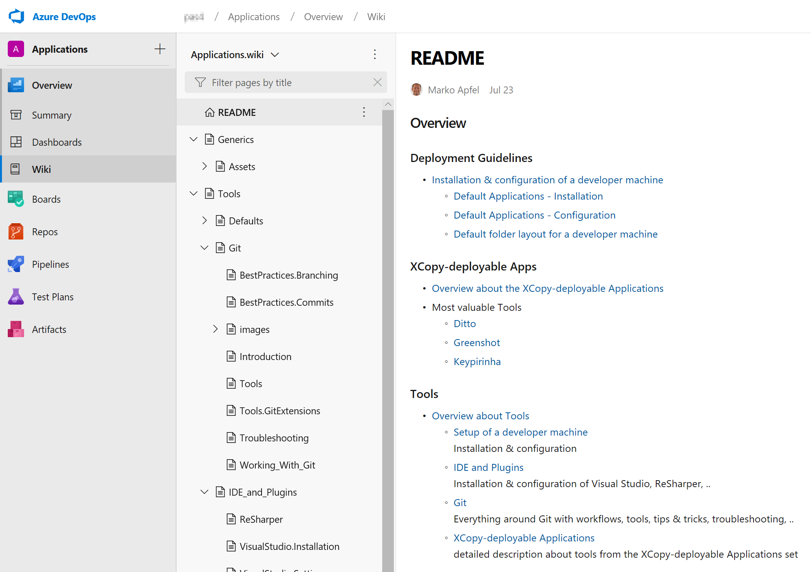

namespace Microsoft.FSharp.Data
module Seq
from Microsoft.FSharp.Collections
from Microsoft.FSharp.Collections
val map : mapping:('T -> 'U) -> source:seq<'T> -> seq<'U>
Full name: Microsoft.FSharp.Collections.Seq.map
Full name: Microsoft.FSharp.Collections.Seq.map
Job Diary
Efforts and Tracking
Overview
How to use this presentation
-
see right-down navigation hints
(yellow triangles show which navigation direction is possible) -
Navigation between topics with arrow keys
- use ⬅ and ➡ to navigate between main topics
- use ⬆ and ⬇ to navigate between sub topics
-
other keys
- use
Spaceto present in order - use
ESCto see the slide-map - use
ffor full screen
- use
Table of contents
- Organizational topics
-
Techniques
(AOP, ) - Tools
- Languages & Frameworks
-
Platforms
(Azure DevOps) -
Others
(Evalation of UI Automation FWs, Tech Talks)
Organizational topics
Table of Contents
- ToDos and open tasks
- Annoying things
ToDos and open tasks
- How to spread knowledge about XCopy-deployable tools?
-
Road ahead and decision about future of VCS?
- Transition to Git
- Recommendation for new projects/repos
- Road ahead with Wiki?
Annoying things
- not for the public (see OneNote "Annoying Things")
- some keywords
Passion
- state-of-the-art workflows, tool sets
- missing productivity (tools, shortcuts)
- collaboration culture (slack, wiki)
Mustiness
- agile principles (pair coding, reviews)
- prohibited resources, file transfers
- collaboration toolset
Techniques
Techniques ToC
API Design
- abstract into view of customer
- carve out distinction between SDK and API
- structure DevTree appropriate
Fluent Interface
- ensure an easy UX
- rethink fluent API
1: 2: 3: 4: 5: |
|
Dependency/Package Management
NuGet
- dependencies analysis with availability of official packages
- rethink the OSS licenses and workflows
Internal Package Management
- provision of internal NuGet feed
upstream sourcefunctionality to proxy & store external packages- showcase for internal packages (co-work with AC & N?)
Migration
- BVMS UI Automation
- Nurses, 1st Feature Branches
Build Automation
- Pipeline as Code
- F# Make (FAKE)
Pipeline as Code
- see Azure DevOps
Fake
Documentation
Table of Contents
- Wiki
- Code documentation
BVMS UI Automation Wiki
- started to create a project Wiki
- based on Azure DevOps (Git & Markdown)
- capture knowledge about the BVMS UI Automation
- provide SMM, SDS,...
Start with some basic knowledge

Technical Wiki
- SharePoint Wiki is not a Wiki
-
a lot of limitations
- no real history for easily scanning for changes
- no offline capabilities
- bundling belonging things into "atomic" commits not possible
- allows too much individual formatting
-
?: What about versioning?
- With conflict management?
- With diffing?
- ?: no commit message?
Start with content
- Prepared a show case for a tWiki
-
XCopy-deployable Apps
- Deployment Guidelines
- Details about some tools
-
IDE and Plugins
- Visual Studio IG
- ReSharper
-
Git
- Introduction
- Workflows
- Best Practices: Branching
- Best Practices: Commits
- Troubleshooting

Tools
Tools Overview
- AOP with PostSharp
- Fake
- DocFX
- ReSharper
- Other Tools
AOP with PostSharp
-
get rid of primitive obsessions
e.g.intdata types with restricted value range
1: 2: 3: |
|
DocFX
- Microsoft developed documentation tool
- open source successor of SHFB for multiple platforms
-
allows easily mix code documentation with additional content
(e.g. XML Comments, API documentation (OAS), tutorials, concepts,...) - great support for .NET Core projects
Mix XML Comment with Wiki
- currently the XML Comments are merged together with Wiki content
- it is done inside the
docfx.jsonfile

Host the DocFX output via GitHub Pages
- used the
apm1grbaccount to host the DocFX output - you can find here: https://apm1grb.github.io/
- technically the content of the
_sitefolder was included in an own repo

Wiki part of the documentation
Code/API/SDK part of the documentation

Improvement: Split into SDK & API Documentation and aggregate topics

Usage of Git Submodules
-
ties repository of source code (with its XML Comments) together with belonging repositories:
- Wiki content
-
DocFX generated comprehensive documentation
(as static web sites to host on GitHub Pages or Azure WebSites)
-
needs awareness about workflows
(when to pull Wiki and to push "_site-repo" (GitHub Pages))
Command examples
-
checkout of the Wiki repo below
docfolder1: 2:
git submodule add git@ssh.dev.azure.com:v3/<organization>/<project>/<repository>.wiki doc/wiki -
checkout of "
_site-repo" belowdocfolder1: 2:
git submodule add git@<alias>username>/<username>.github.io.git doc/_site -
cloning with all submodules
1: 2:
git clone git@ssh.dev.azure.com:v3/<organization>/<project>/<repository> --recursive
Provide complete XML Comments
- completely documented all public and protected interfaces
- re-introduced GhostDoc in toolset

Other tools
Table of Contents
- Slack: seamless and productive messaging and co-working
- FsReveal: fancy presentations with versioning for devs
- LINQPad: Lightweight C# IDE
- Git: versioning
- Markdown: productive markup language for Wikis and other documentations
Slack
- cloud-based set of team collaboration software tools and online services
- Slack = "Searchable Log of All Conversation and Knowledge."
- most famous platform
Status Quo
- created a workspace, prepared some channels
- invited SM, FM

Alternatives
Contact with colleagues in AC
- alternative platform: Mattermost
- on-prem possible & open source
- not really adopted there
Road Ahead with O365
- under investigation, official rollout?; not accessible from E-Net
- Teams as the successor of Skpye would be a perfect alternative
Introduced FsReveal
- to provide fancy web-based presentations
- neutralized the tWiki presentation from the past
-
started to host that version at
http://mapfel.github.io/wiki-presentation -
which is the same as
http://blog.apfel.space/wiki-presentation/ - it can be used as the template for company specific presentations
-
redirecting of the sub domain was made in the past
→ have to figure out how
Languages and Frameworks
Table of Contents
xUnit
-
benefits of xUnit compared to NUnit
- .NET Core "default" testing FW
-
felt to be more logical/intuitive and aligned with C# language
ctorvs.[SetUp]attribute InlineDataandMemberDatato parametrize unit test?

FluentAssertion & Shouldly
- started with Shouldly (used in PluralSight course)
- switched later to FluentAssertions (seen as better alternative)

F-Sharp
- F# Make
- ExcelProvider
F# Make (FAKE)
- cross platform automation system, mainly used for builds and releases
- the DSL was designed to be succinct, typed, declarative, extensible and easy to use
- all benefits of the .NET Framework and functional programming can be used, including the extensive class library, powerful debuggers and integrated development environments
ExcelProvider
Challenge:
"use Excel sheets to create a BVMS configuration"
-
F# type provider for Excel
- allows easiest access of sheet content
- creates strongly-typed type out of the sheets data
1: 2: 3: 4: 5: 6: 7: |
|
Platforms
Table of Contents
-
Azure DevOps
(ALM platform with Wiki, pipelines, ...)
Azure DevOps
- successor/evolution of Visual Studio Team Services
- Repositories, Pipelines, Artifacts, Boards, Test Management
- Cloud and on-premises
Virtual Infrastructure
- step into the VS Enterprise benefits
- BVMS provisioning for a VMs
Build Pipeline based on yaml
- created
yaml-based build pipeline - pipeline as code, infrastructure as code
Release Pipeline
Others
Table of Contents
Evaluate UI Automation Frameworks
- Coded UI
- TestStack White
- Appium
- FlaUI
Coded UI
-
deprecated (VS 2019 is the last supporting version)
see: Changes to Coded UI Test in Visual Studio 2019 -
too chatty by recording
→ difficult to maintain - toolset might be allow to capture details which other tools not able to do
TestStack White
- abandoned (last commit in MAR 2017)
-
maybe one of the 500 forks is still under development?
- half a dozen have newer commits
-
but first look doesn't show benefit
e.g. add Azure build capabilities
-
mix of UIA 2 (base for White) and 3 (sloppily added)
- UIA 2: has limited capabilities (e.g. Spinner)
- UAI 3: currently maintained by MS
Appium
- recommended from MS to use for Desktop App testing
- not possible to get it properly to run
- uses a web based host for interaction with user
FlaUI
- based on ideas of TestStack White
- under maintenance, 12 contributors
- acceptable documentation, blog
-
more concise and handy compared to TestStack White
nevertheless very similar regarding architecuture, principles,...
We use that for further steps.
Tech Talk JUL 2019
- Azure DevOps
- Technical Wiki
- XCopy-deployable Apps
Azure DevOps
- SSO with Bosch BCN Account
- Awareness-Creation/Knowledge-Transfer in ENG-teams
-
Creation of an organization as a playground
- incl. groups and members for/of ENG-teams